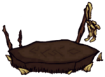

| Touch Stone | |
|  |
|
| Resources | |
| Renewable? | No |
| DebugSpawn | "resurrectionstone" |
| “ | I guess I should touch it? | ” |
| –Willow | ||
A Touch Stone is a structure found in the world which can be used for resurrection. It cannot be hammered or destroyed by Clockwork Rooks or Deerclops; instead, it is activated by clicking on it. When activated, the character will be returned to the Touch Stone upon death, and the Touch Stone itself will be destroyed, dropping its constituent items. It is surrounded by 4 Pig Heads, which are not needed for a Touch Stone to function and can be deconstructed. Also, the player can dig up the wooden turf underneath it, obtaining Wooden Flooring, without affecting the Touch Stone's usability.
A Touch Stone is one of three methods for resurrection; the others being the Meat Effigy and the Life Giving Amulet. The player will always respawn at the closest Meat Effigy or Touch Stone.
There are only 2 Touch Stones per world on default settings, though the amount can be increased before beginning the game. Touch Stones cannot spawn in Caves and Ruins.
Touch Stones are activated simply by clicking on them. When this happens they will rise out of the ground and fill in, creating a small platform upon which the character will be resurrected. Once it brings a character back to life the Touch Stone will be destroyed, leaving behind 2 Rocks, 2 Marble, and 1 Nightmare Fuel. If more than one Touch Stone has been activated, the nearest one will be used.
| Naturally spawning world objects | |
| Plants | Berry Bush • Carrot • Cave Banana Tree • Cave Lichen • Flower (Evil Flower, Fern) • Grass • Light Flower • Lureplant • Mandrake • Mushrooms • Mushtree • Plant • Reeds • Sapling • Spiky Bush • Tree • Totally Normal Tree |
| Mobs and Mob Housing | Beehive • Hound Mound • Pond • Pig Fortress • Pig House • Pig King • Pig Torch • Rabbit Hutch • Rundown House • Slurtle Mound • Spider Den • Spilagmite • Splumonkey Pod • Tallbird Nest • Walrus Camp • Worm Hole |
| Inanimate | Ancient Pseudoscience Station • Ancient Statue • Basalt • Boulder • Gramaphone • Grave • Harp Statue • Headstone • Suspicious Dirt Pile • Marble Pillar • Marble Tree • Maxwell's Door • Maxwell Statue • Maxwell's Light • Merm Head • Nightmare Light • Nightmare Lock • Nightmare Throne • Obelisk • Ornate Chest • Pig Head • Pillars • Relic • Sinkhole • Skeleton • Stalagmite • Touch Stone • Thulecite Wall |
| Things | Box Thing • Crank Thing • Eye Bone • Metal Potato Thing • Ring Thing • Wooden Thing |
{kind=link}
{kind=link}